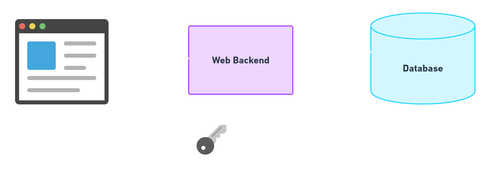
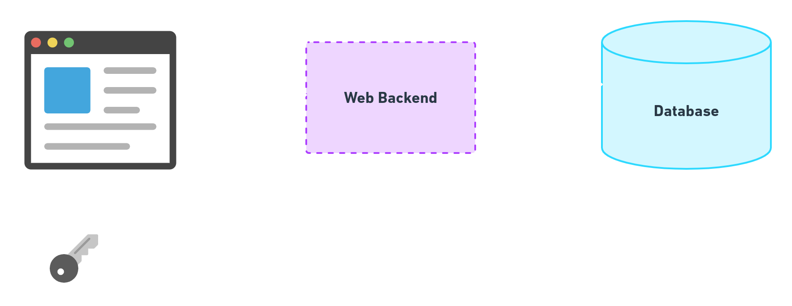
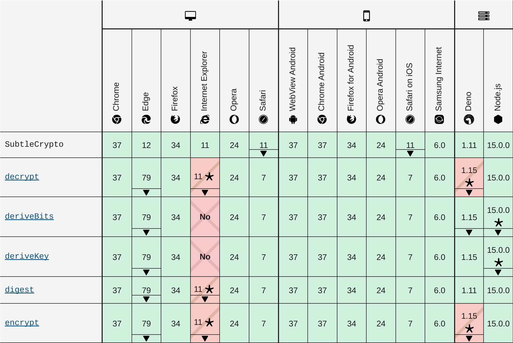
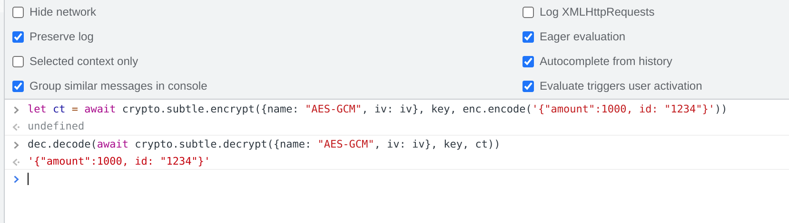
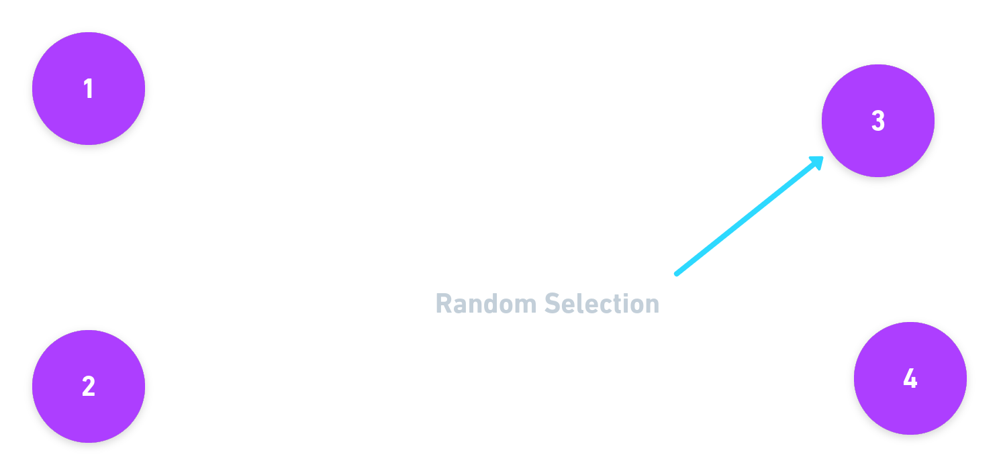
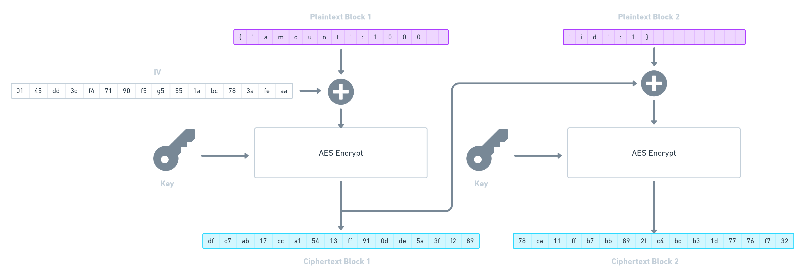
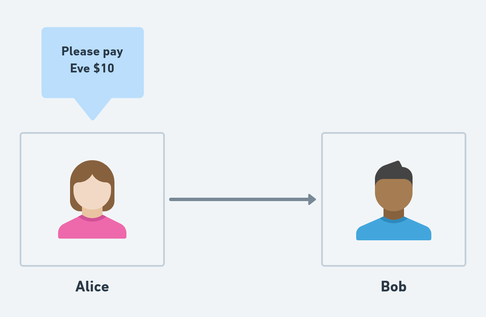
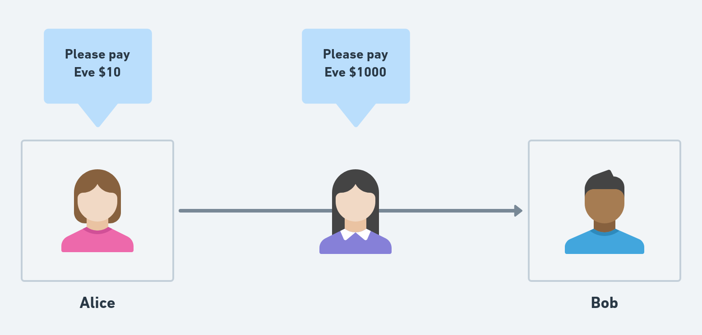
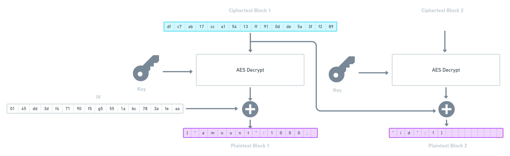
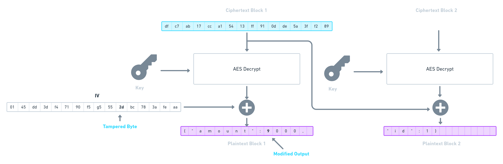

Cryptography
in the Browser
Why?

Shifting Trust

State of Crypto
- Web Assembly (e.g. Rust)
- Web Crypto API

SubtleCrypto
There be demons!
HTTPS Only

Secrecy
Symmetric Encryption

AES: Advanced Encryption Standard
Rijndael block cipher

Using AES in the browser
- Encoded message
- Key
- Initialisation vector
- Authenticated Associated Data (AAD)
1. Convert to an ArrayBuffer
let enc = new TextEncoder()
let plaintext = enc.encode("this is a secret message")
AES Keys
128-bit,
192-bit
or 256-bit
Block size is always 16-bytes
The same key is used for both encrypt and decrypt
2. Generating a Key
let key = await window.crypto.subtle.generateKey(
{
name: "AES-GCM", // Mode
length: 256 // Key size
},
true, // Allow exporting
["encrypt", "decrypt"] // Allowed usage
)
3. Initialisation Vector
...but first some theory!
Electronic Code Book
Deterministic Block Encryption
// Pseudo-code
AESEnc(k, "dog0000000000000") = "0b36a49defdf08b5d71e27..."
AESDec(k, "0b36a49defdf08b5d71e27...") = "dog0000000000000"
AESEnc(k, "dog") // Fails!
Deterministic encryption is not secure!
AES(k, "dan@coderdan.co0") => "86cac65c67488991299d753..."
SELECT email_ct, product_name FROM purchases;
| product | email
|------------|----------------------------------|
| Pizza | 86cac65c67488991299d753f697f11fd |
| Milk | 6ef04978077008442b8378760c92ed49 |
| Chocolate | 86cac65c67488991299d753f697f11fd |

Randomised Encryption
// Pseudo-code
AESEnc(r: IV, k: CryptoKey, m: Message)
Use the Initialisation Vector for non-determinstic encryption
AES("041e6ab6031ecb6dc08665f0b072a8b8", k, "0000000000000000")
// => "0b36a49defdf08b5d71e27c12949dac7"
AES("c8e799d08724d31e8fe86dce93fc69c5", k, "0000000000000000")
// => "78032585e79c4465221fd2176dae21ba"
Nonce: Number used once!
IVs must never be repeated
Hardcoded IVs result in deterministic encryption!
Choosing a nonce
Option 1: using a counter
let buf = new ArrayBuffer(8)
let iv = new BigUint64Array(buf)
iv.set([1n]) // Increment every call to encrypt
Option 2: Strong Random Number
let iv = window.crypto.getRandomValues(new Uint8Array(16))

23 people at a party
How many share a birthday?
50%
 Will we get a repeated value after
Will we get a repeated value after n IVs?
\[\begin{aligned}
Pr[collision] = 1 - e^{n^2/(2^{b+1} - 1)}
\end{aligned} \]
Where b is the IV size in bits.
A 32-bit (4-byte) IV?
After 100,000 encryptions
\[\begin{aligned}
1-e^{-100000^2/(2^{33}-1)}
\end{aligned} \]
...68.5%!
A 64-bit (8-byte) IV?
After 100,000 encryptions
\[\begin{aligned}
1-e^{-100000^2/(2^{65}-1)}
\end{aligned} \]
2.7x10^-10 (or less than 1 in a billion)!
After 1,000,000,000 encryptions
\[\begin{aligned}
1-e^{-100000^2/(2^{65}-1)}
\end{aligned} \]
2.7%
16 GB
If in doubt just use 128-bits
// 16-bytes = 128 bits
let iv = window.crypto.getRandomValues(new Uint8Array(16))
Don't do this!
Math.floor(Math.random()*10000000)
Short Messages
Padding
pad("1000")
// => "1000000000000000"
PKCS#7
Public Key Cryptography Standard #7
Messages longer than a block
["The quick brown ", "fox jumped over ", "the lazy dog"]
// Pseudo-code
[
AESEncrypt("The quick brown ", k, iv1)
AESEncrypt("fox jumped over ", k, iv2),
AESEncrypt(pkcs7("the lazy dog"), k, iv3])
]

let iv = window.crypto.getRandomValues(new Uint8Array(16))
let ct = await crypto.subtle.encrypt(
{name: "AES-CBC", iv: iv},
key,
enc.encode('A secret message')
)
dec.decode(await crypto.subtle.decrypt(
{name: "AES-CBC", iv: iv}, key, ct)
))
// => 'A secret message'
IVs are not secret
{
"ciphertext": "DF417FF31FE912EBA72C4051DF6D4643",
"iv": "C7D322B83B65ED1A7DBCB60907CFEBCB"
}
Wait!




let iv = window.crypto.getRandomValues(new Uint8Array(16))
let ct = await crypto.subtle.encrypt(
{name: "AES-CBC", iv: iv},
key,
enc.encode('{"amount":1000, id: "1234"}')
)
iv.set([1], 10)
dec.decode(await crypto.subtle.decrypt(
{name: "AES-CBC", iv: iv}, key, ct)
))
// => '{"amount":9000, id: "1234"}
4. Authenticated Associated Data
AES-GCM
Galois Counter Mode
Encrypting using GCM
let ciphertext = await crypto.subtle.encrypt(
{
name: "AES-GCM",
iv: iv
},
key,
plaintext
)
iv.set([45], 10)
dec.decode(await crypto.subtle.decrypt(
{name: "AES-GCM", iv: iv}, key, ct)
))
// => DOMException
let ciphertext = await crypto.subtle.encrypt(
{
name: "AES-GCM",
iv: iv,
additionalData: '{"keyId": "b82daa3f-3eac-4c..."}'
},
key,
plaintext
)
No padding required
AES-GCM
Recommendations: NIST publication 800-38D
Final Thoughts
About me
- Twitter @danieldraper
- Email dan@cipherstash.com
- Web cipherstash.com
...and we're hiring :)